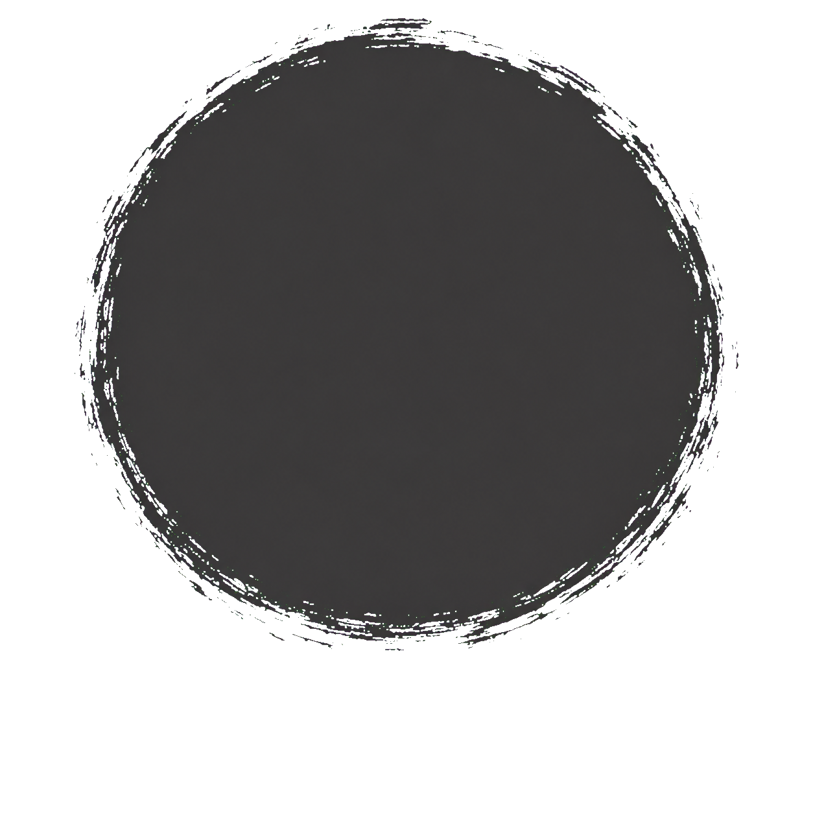
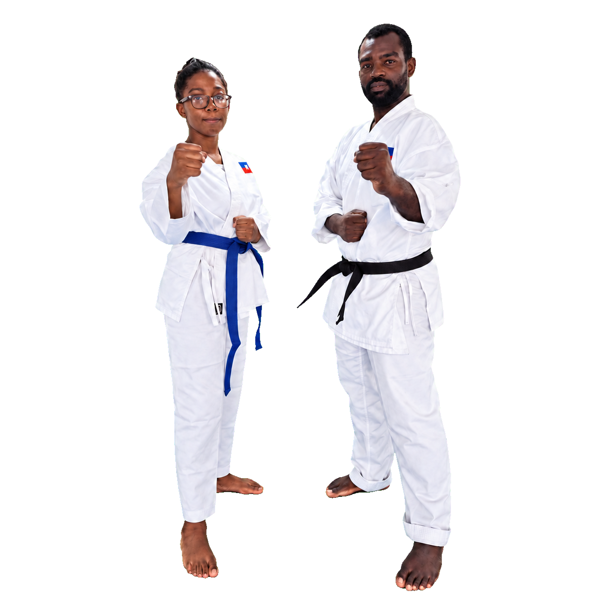
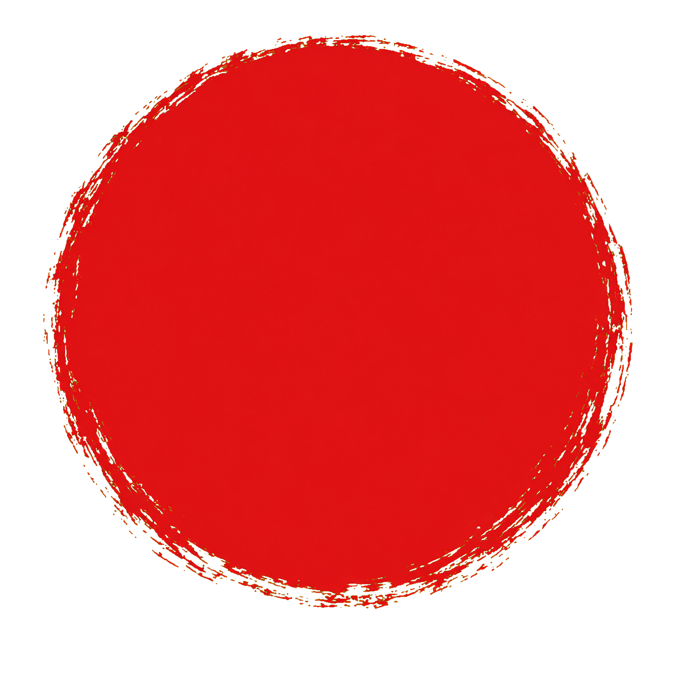
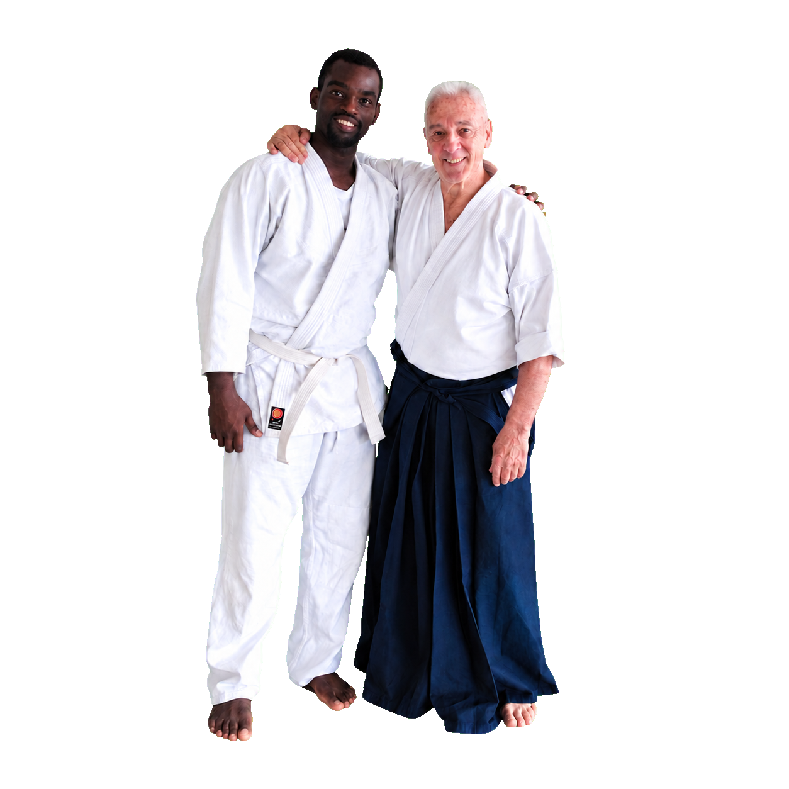
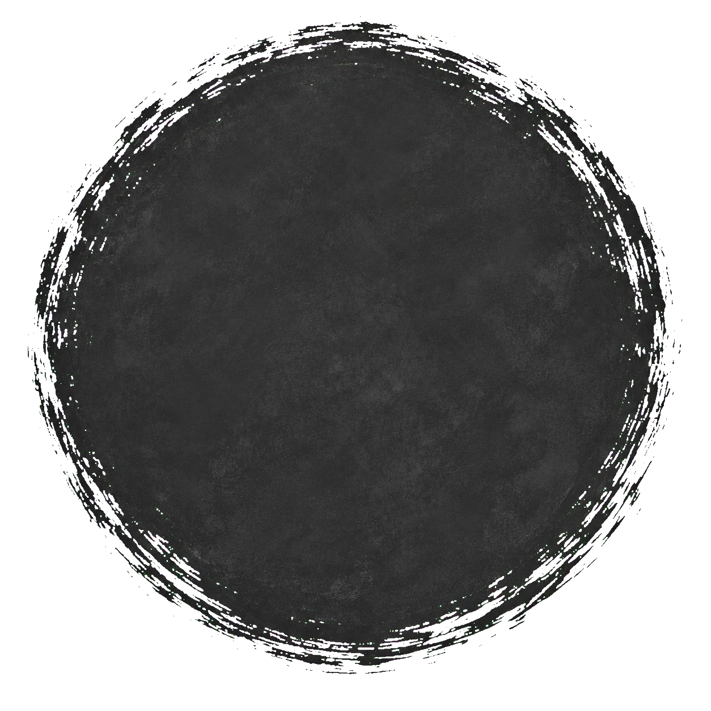
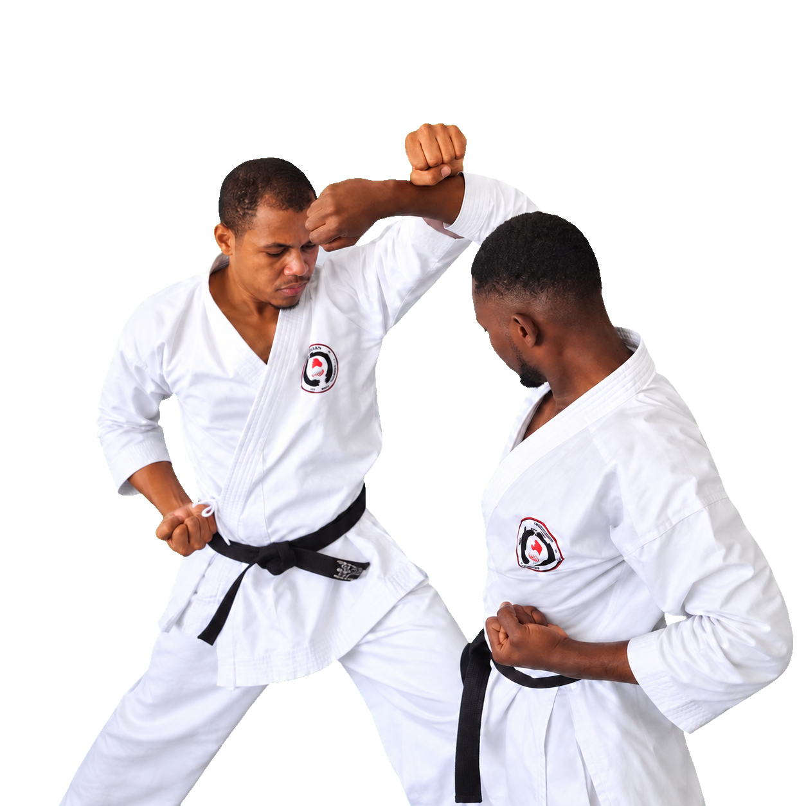
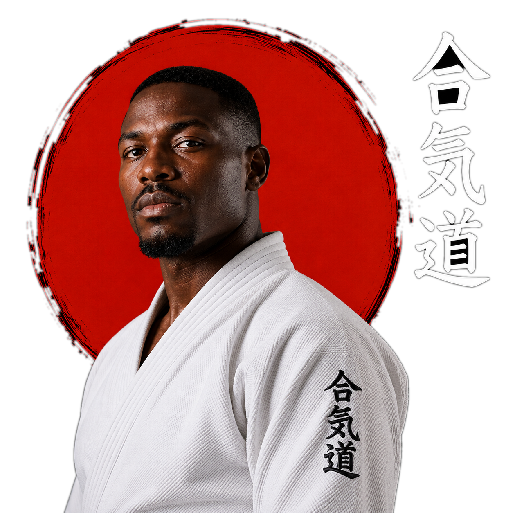
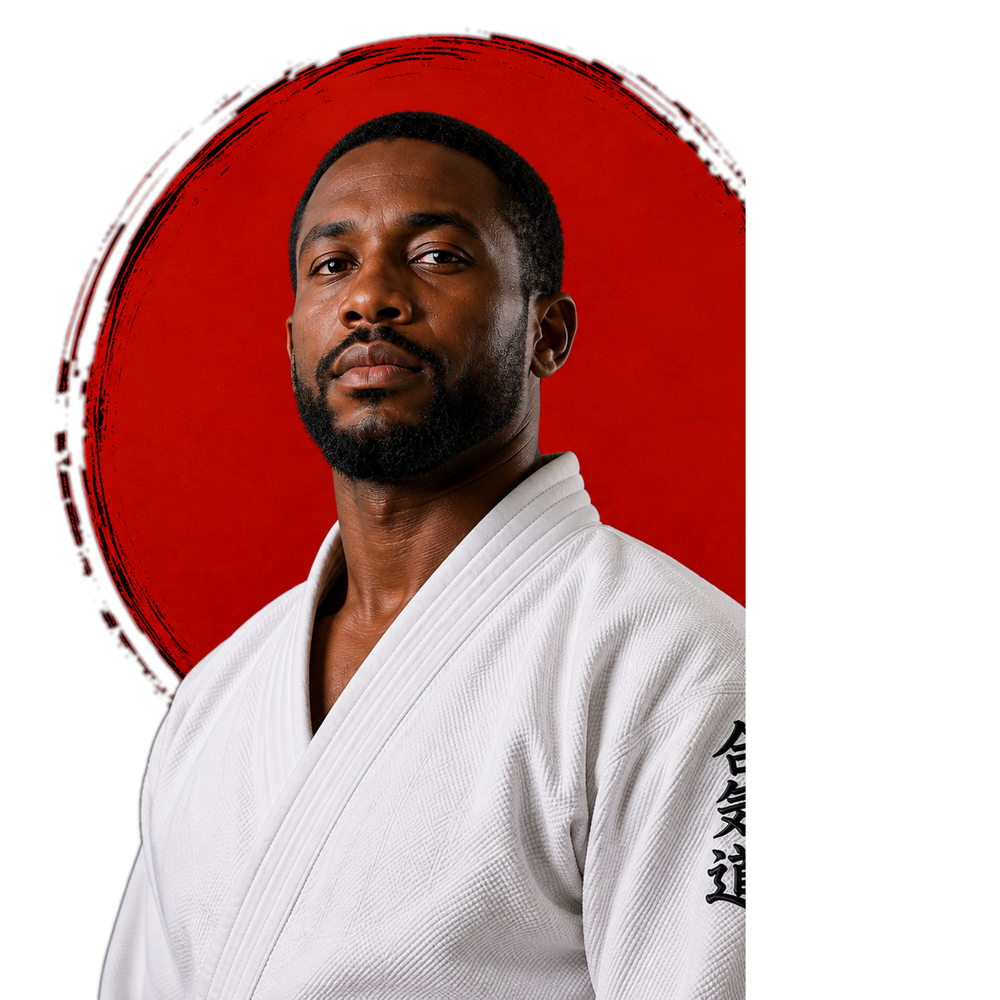
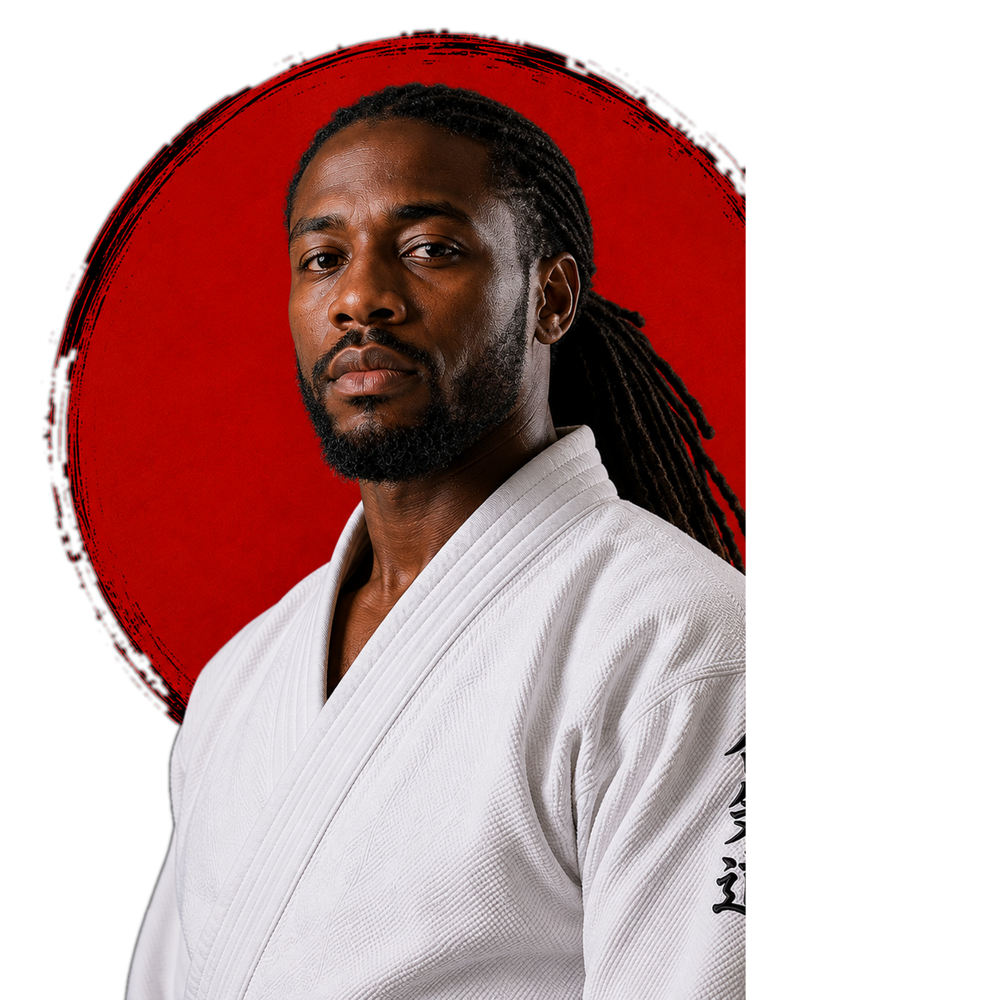

École d'Arts Martiaux Traditionnels
MUSHIN
DOJO
Cours d'Aikido et de Karaté en Haïti. Défense personnelle, discipline et valeurs pour enfants, jeunes et adultes, dans un esprit fidèle à la tradition martiale japonaise.
Le Mushin Dojo est né de la passion pour l'aïkido et le karaté, mêlant discipline japonaise et esprit haïtien. Nos cours s'adressent à tous les âges et tous les niveaux, du débutant au pratiquant confirmé.
Nous cultivons respect, courage et harmonie à travers la pratique martiale, guidés par des instructeurs passionnés.




Notre Histoire
Discipline Japonaise, Esprit Haïtien
Mushin Dojo est né de la passion pour l'aïkido et le karaté, mêlant discipline japonaise et esprit haïtien. Notre mission est de transmettre ces deux arts avec exigence et bienveillance, à tous les âges et à tous les niveaux.
Nos valeurs fondamentales — respect, courage, esprit et harmonie — guident chaque cours, chaque technique et chaque échange entre élèves et instructeurs. Le dojo est fier de son affiliation avec Aikikai República Dominicana, qui renforce notre engagement envers l'excellence dans l'enseignement des arts martiaux.
En Savoir PlusLa Vie Du
Dojo En Images
Notre Philosophie
Au Mushin Dojo, la pratique de l'aïkido et du karaté se fonde sur la discipline, le respect et la recherche de l'harmonie intérieure. Ce n'est pas seulement de la défense personnelle — c'est un chemin de vie guidé par les principes du Bushidō, le code du guerrier samouraï.
Les sept vertus du Bushidō
- Gi (義) — Justice ou Droiture
- Yu (勇) — Courage
- Jin (仁) — Compassion
- Rei (礼) — Respect, courtoisie
- Makoto (誠) — Honnêteté, sincérité absolue
- Meiyo (名誉) — Honneur
- Chūgi (忠義) — Loyauté
Dojo Principal
#68, Fragneauville 43, Delmas 75, Ouest, Haïti
Numéros de Contact
Téléphone : +509 3249-7224
WhatsApp : +509 3249-7224
Courriel
contact@mushindojo.net
Programmes de
Formation
Des cours d'aikido et de karaté du lundi au samedi, adaptés à chaque étape de la vie :
Aikido Adultes
Karaté Enfants
Karaté Adultes
Nos
Événements
Des rendez-vous réguliers pour approfondir la pratique et vivre l'esprit du dojo :
Séminaire Aïkido
Un week-end intense pour approfondir les techniques d'aïkido avec Sensei Alejandro Dominguez.
Stage Karaté
Ateliers pour enfants et adultes, alliant discipline et plaisir dans chaque geste.
Camp d'Été
Une immersion de plusieurs jours pour vivre l'esprit martial et créer des liens forts.


Bénéfices de l'Aikido et du Karaté
L'aïkido et le karaté sont bien plus que des disciplines physiques — ils transforment ceux qui les pratiquent :
- Améliore la condition physique et la santé globale
- Développe la discipline, la concentration et la maîtrise de soi
- Renforce la confiance et la sécurité personnelle
- Enseigne la défense personnelle sans recourir à la violence
- Favorise des valeurs de respect, d'harmonie et de vie en commun pacifique
- Réduit le stress et améliore le bien-être émotionnel
Autodiscipline
Force
Défense efficace
Respect
Dans l'aïkido, le respect se vit avant même la technique : on salue le tatami, son partenaire, son instructeur. Un partenaire d'entraînement n'est pas un adversaire à vaincre, mais quelqu'un qui progresse avec vous. C'est cette attention sincère à l'autre qui transforme la pratique martiale en un véritable chemin de vie.


Courage
Avancer face à une chute, se relever après un échec, accepter d'être débutant devant les autres : le courage en aïkido n'est pas l'absence de peur, mais la volonté de progresser malgré elle. Avec le temps, cette capacité à affronter l'inconfort sur le tatami se retrouve aussi dans la vie de tous les jours.
Harmonie
Plutôt que de s'opposer frontalement à la force adverse, l'aïkido cherche à s'y accorder pour la rediriger — c'est l'idée même du mot « aï », l'union des énergies. Cette écoute constante entre les corps devient, avec la pratique, une manière d'aborder les conflits du quotidien : chercher l'accord plutôt que l'affrontement.

Nos
Horaires
Les cours d'Aikido et de Karaté se tiennent du lundi au samedi, adaptés aux enfants et aux adultes, débutants ou confirmés.
Lundi au Vendredi
2:00 PM – 9:00 PM
Samedi
8:00 AM – 9:00 PM
Écrivez-nous
Réservez Votre Cours D'Essai
Parlez-nous un peu de vous et nous vous contacterons pour organiser votre première visite au dojo. Vous pouvez aussi nous écrire directement :
Tél : +509 3249-7224 · Email : contact@mushindojo.net
Message envoyé !
Nous avons bien reçu votre message et vous contacterons très bientôt.